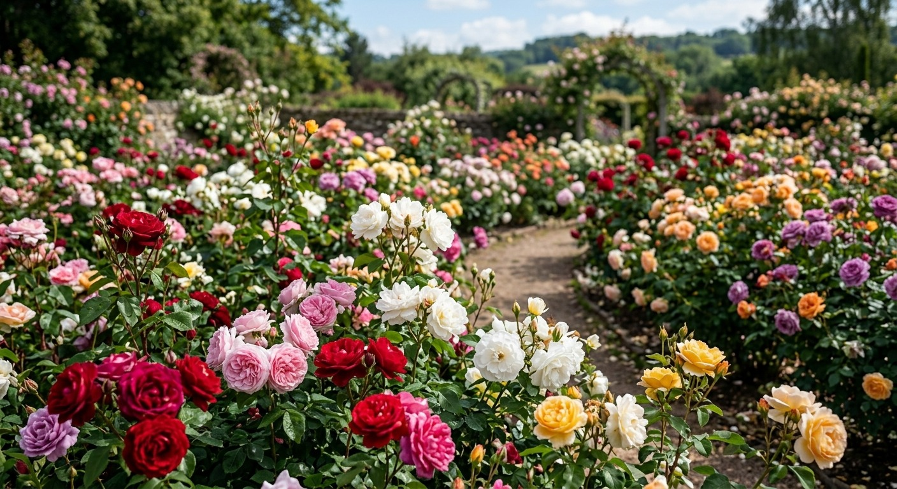

O Encanto das Rosas

Bem-vindo ao Mundo das Rosas, um espaço dedicado a uma das flores mais famosas e admiradas de todo o planeta. Com as suas cores vibrantes e perfume inconfundível, a rosa é símbolo de amor, beleza e elegância há milhares de anos.
Principais Variedades de Rosas
- Rosas de Chá: Famosas pela elegância e aroma delicado.
- Rosas Trepadeiras: Ideais para decorar arcos, pérgulas e muros.
- Rosas Miniatura: Perfeitas para cultivo em vasos e pequenos espaços.
- Rosas Arbustivas: Muito resistentes e de floração abundante.
Explore o nosso site para aprender mais sobre a história das rosas, os seus significados e os cuidados essenciais para as manter sempre bonitas.